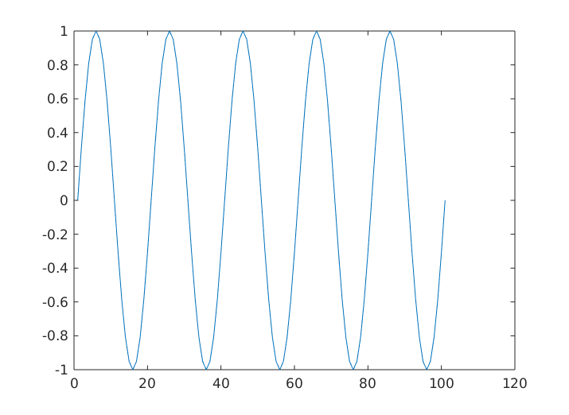
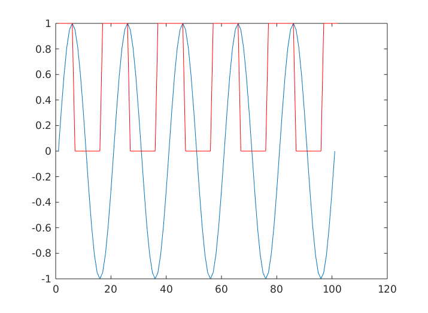
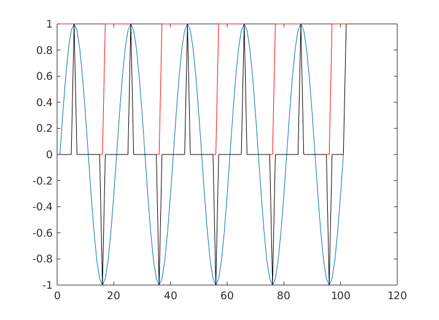

Contents
% BUSCAMAXIMOS Detecta todos los máximos de una se�al % % Syntax: maximos=buscamaximos(datos) % % Input parameters: % datos-> señal en la que se buscarán los máximos % % Output parameters: % maximos<- señal del mismo tamaño que datos, en la que aparece un 1 en % la posición de cada máximo y un 0 en el resto de instantes. % % Examples: % % See also: buscamaximosth, localmaxima % Author: Diego % History: xx.yy.zz Diego creacion del archivo % JC, añade comentarios % 19.12.07 incorporada a la toolbox % 21.01.08 documentada % 30.09.19 adaptada a la nueva documentación function maximos=buscamaximos(Datos)
Se construye una señal de ejemplo para la documentación.
if (nargin==0) t=0:0.1:10; Datos=sin(2*pi*0.5*t); plot(Datos) end
Se calcula la derivada
Datos=conv(Datos,[1,-1]);
Y se determina su signo
Datos=1*(Datos>=0); if (nargin==0) hold on plot(Datos,'r'); end
La segunda derivada indica los pasos de creciente a decreciente
Se cambia el signo para que sea positivo en máximos y negativo en mínimos
Datos=conv(Datos,[-1,1]);
Se corrige el retraso de una muestra introducida por las dos derivadas
Datos=Datos(2:end); if (nargin==0) hold on plot(Datos,'k'); end
Los máximos son los pulsos positivos:
maximos=(Datos>0);
ans = 1×102 logical array Columns 1 through 19 0 0 0 0 0 1 0 0 0 0 0 0 0 0 0 0 0 0 0 Columns 20 through 38 0 0 0 0 0 0 1 0 0 0 0 0 0 0 0 0 0 0 0 Columns 39 through 57 0 0 0 0 0 0 0 1 0 0 0 0 0 0 0 0 0 0 0 Columns 58 through 76 0 0 0 0 0 0 0 0 1 0 0 0 0 0 0 0 0 0 0 Columns 77 through 95 0 0 0 0 0 0 0 0 0 1 0 0 0 0 0 0 0 0 0 Columns 96 through 102 0 0 0 0 0 0 1
La salida es:
una secuencia de unos y ceros, con los unos correspondiendo a la posición de los máximos. Los indices se pueden calcular con el comando find()